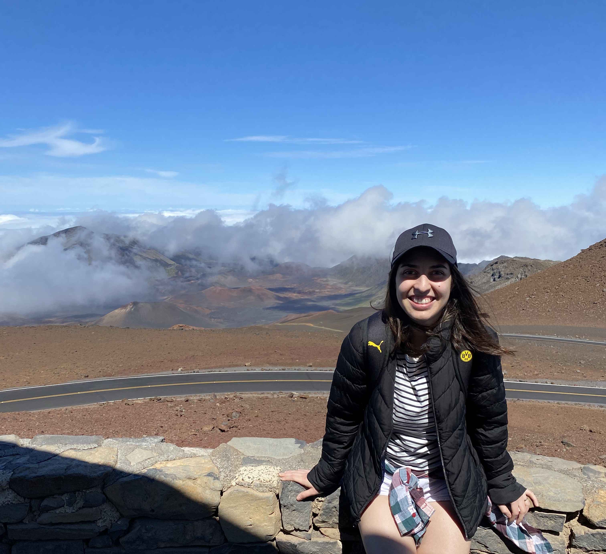

About Me
Hi there! I am from Brazil, but I call Canada home for almost a decade now. I have a degree in Pharmacy back home, and when I moved here I had to start over, so my plan was to become a cook. I have always been passionate about food and flavours, and how all that comes together, not only in a practical, but also in a visual way. So I tried to combine both my passion with my career, and it worked so far.
A few years passed and I started to feel a little stuck - my creative side was dorment and I couldn't express myself. Then, once again, it was time to move away from the confort zone. I created courage to start something that I never have planned on doing again: Persue a whole new career in Media Design - overcome my limits and achive new dreams, that is my new plan for this part of my life.
The only limit to our realization of tomorrow will be our doubts of today.
-Roosevelt, Franklin D.